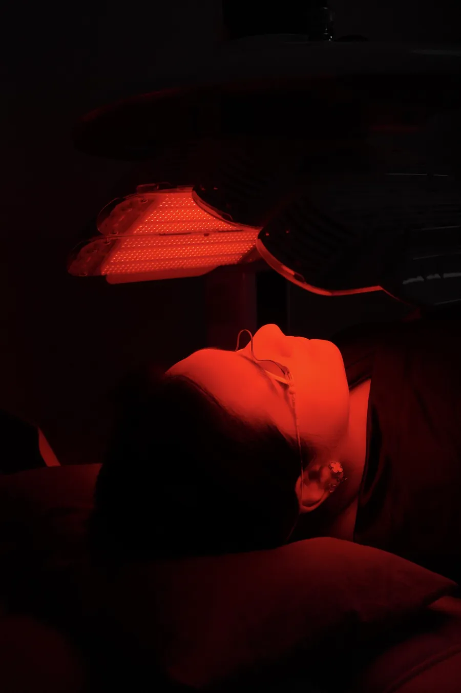

Por qué importa
Tu piel,
en su mejor versión.
El rostro es lo primero que refleja el paso del tiempo: pierde colágeno, hidratación y firmeza, y la textura cambia. La medicina estética facial actúa sobre esos procesos desde su origen, estimulando la regeneración natural de la piel sin necesidad de cirugía ni largos tiempos de recuperación.
En MET Clinic partimos siempre de un diagnóstico de piel para diseñar un protocolo a tu medida. Combinamos hidradermoabrasión, radiofrecuencia, ultrasonido, fotobiomodulación y activos médicos de grado profesional para tratar arrugas, flacidez, manchas y luminosidad de forma gradual y armónica.
Tratamientos
Lo que ofrecemos
Hydrafacial
Tratamiento médico no invasivo que limpia, exfolia, extrae impurezas e infunde sueros de activos en un solo procedimiento, gracias a su tecnología de vórtice. Busca una piel más hidratada, luminosa y uniforme, con recuperación mínima, y se personaliza con boosters según tu necesidad.
Recuperación mínima · Paquete de 4 sesionesEndymed 3DEEP
Radiofrecuencia con tecnología 3DEEP que dirige energía controlada a la dermis para calentar las fibras de colágeno y estimular su producción. Tensa y reafirma la piel, redefine el contorno facial y mejora textura y arrugas de forma progresiva. Sus aplicadores Intensif (microneedling RF) y FSR suman remodelación profunda y resurfacing.
Lifting sin cirugía · Paquetes de 3 a 6 sesionesSofwave
Ultrasonido SUPERB (haces paralelos sincronizados) que entrega energía a la dermis media para estimular la formación de colágeno nuevo, mientras un sistema de enfriamiento protege la superficie de la piel. Lifting no invasivo de rostro, cuello y escote, cuyo efecto se valora de forma gradual en los meses siguientes. Aprobado por la FDA.
Lifting con ultrasonido · Recuperación mínimaHealite II LED
Terapia de luz LED de baja potencia que aprovecha longitudes de onda específicas para acelerar la reparación celular y la regeneración de la piel. El protocolo 633 nm (luz roja) favorece el rejuvenecimiento y calma la piel, mientras el 830 nm trabaja sobre cicatrización y recuperación. Es un tratamiento indoloro y con recuperación mínima, ideal como complemento de otros procedimientos.
Indoloro · Paquetes de 8 y 10 sesiones
Biorrevitalización & Peelings
Protocolos médicos con líneas dermatológicas de grado profesional —Mesoestetic, TOSKANI y más— que nutren, renuevan y revitalizan la piel desde dentro. Peelings, retinol, mesoterapia con polinucleótidos y exosomas para tratar manchas, arrugas, ojeras y falta de luminosidad, siempre bajo indicación médica.
Protocolo médico personalizadoPreguntas frecuentes
Lo que más nos preguntan.
¿Por dónde empiezo?
Por un diagnóstico de piel. Con él diseñamos un protocolo a tu medida, que puede combinar hidradermoabrasión, radiofrecuencia, ultrasonido, fotobiomodulación y activos médicos.
¿Hydrafacial tiene tiempo de recuperación?
No. Limpia, exfolia, extrae impurezas e hidrata en un solo procedimiento, con recuperación mínima, y también está disponible en paquete de 4.
¿Cuántas sesiones de radiofrecuencia necesito?
Endymed 3DEEP se trabaja en paquetes de 3 a 6 sesiones. Su efecto es progresivo: estimula la producción de colágeno para tensar, reafirmar y redefinir el contorno.
¿Necesito cirugía para un efecto lifting?
No. Estos tratamientos estimulan la regeneración natural de la piel sin quirófano ni largos tiempos de recuperación, para un resultado gradual y natural.
¿Cómo agendo?
Por Doctoralia o por WhatsApp al 55 4009 9923. La clínica está en Guty Cárdenas 65, Col. Guadalupe Inn, Álvaro Obregón, CDMX.
Tu mejor versión
empieza con un diagnóstico de piel.
Agenda con la Dra. Melina Trujillo y diseñemos juntas el protocolo facial adecuado para ti.
Los resultados varían en cada persona. Todo tratamiento requiere una valoración médica previa, en la que la doctora explica beneficios, riesgos y contraindicaciones. Dra. Melina Trujillo Quiroz · Cédulas profesionales 9177465 · 5574513.